"Sou catequista há 12 anos e nunca tinha visto algo tão claro. Os mapas mentais facilitam muito explicar para as crianças e adultos!"
Maria Aparecida
Aparecida, SP
O Mapa do Catecismo transforma os mais de 2.800 parágrafos do Catecismo em mapas mentais ilustrados — para você conhecer, viver e ensinar a fé com clareza.
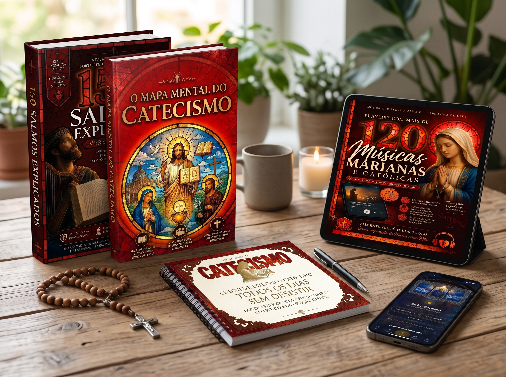
Histórias reais de quem está vivendo a fé com mais clareza
"Sou catequista há 12 anos e nunca tinha visto algo tão claro. Os mapas mentais facilitam muito explicar para as crianças e adultos!"
"Sempre quis ler o Catecismo, mas achava muito denso. Com esse material, finalmente entendi a profundidade da nossa fé. Recomendo!"
"Comprei para mim e acabei comprando para meu marido também. Estamos estudando juntos toda noite. Mudou nossa vida espiritual."
"Material impecável. Linguagem simples, fiel ao Magistério e visualmente lindo. Vale cada centavo, comprei a oferta completa."
"Os bônus são incríveis! O planner me ajudou muito a criar uma rotina de oração e estudo. Recomendo de coração."
"Como pai, queria ensinar a fé para meus filhos com mais segurança. Esse mapa do catecismo virou nosso guia familiar."
Um panorama do conteúdo que você vai receber.
Sempre quis estudar o Catecismo, mas não sabia por onde começar.
Quer preparar encontros didáticos e visualmente envolventes.
Deseja ensinar a fé católica para os filhos com clareza.
Quer aprofundar nos 2.800+ parágrafos com mapas mentais.
Cada tema é apresentado com mapas mentais, ilustrações e linguagem direta — sem perder a profundidade da Tradição da Igreja.
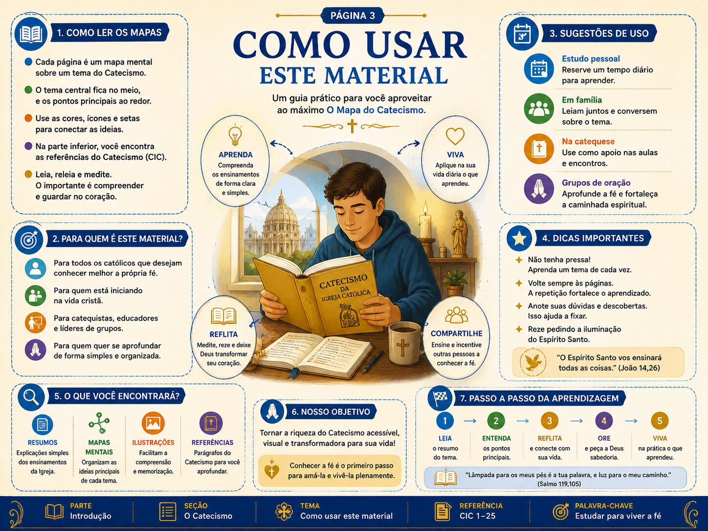
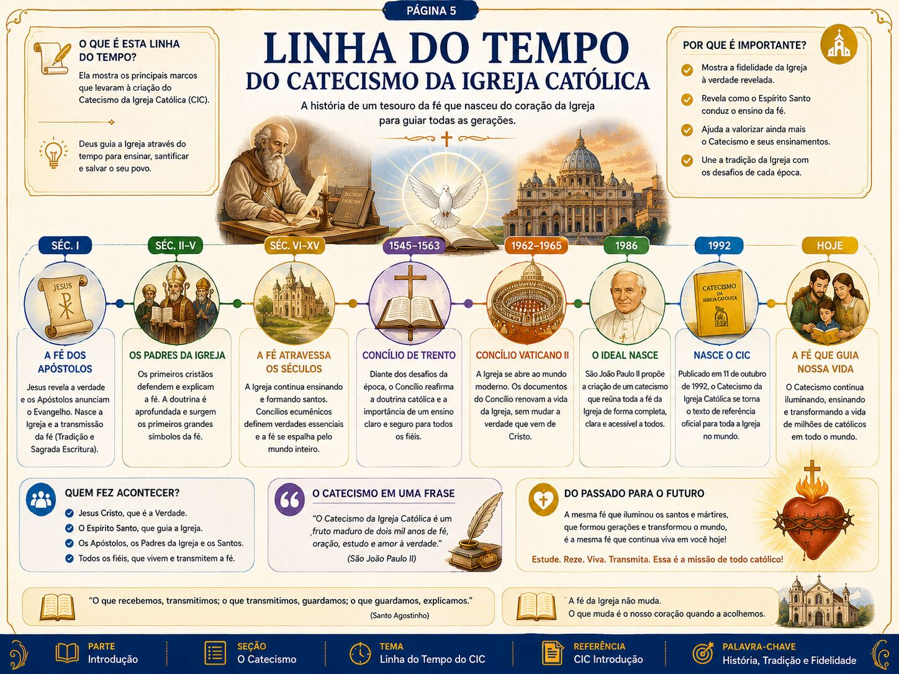
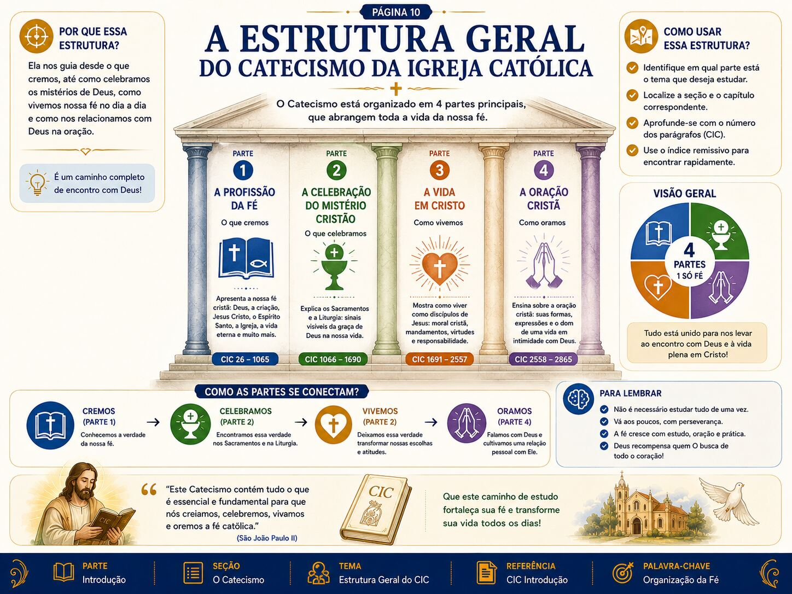
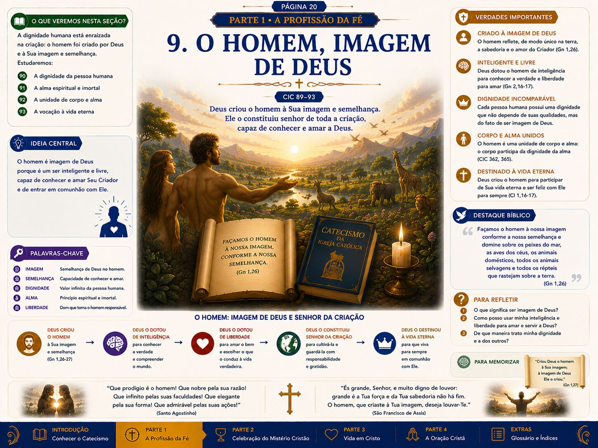
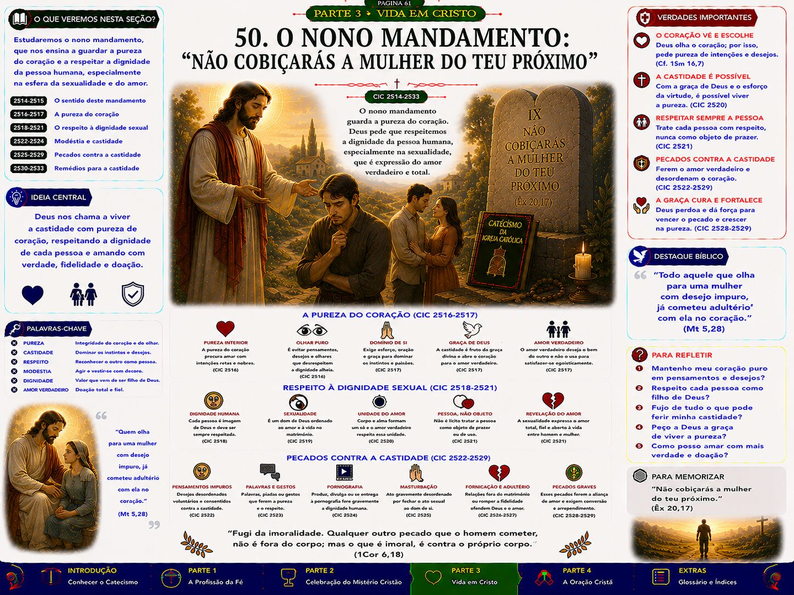
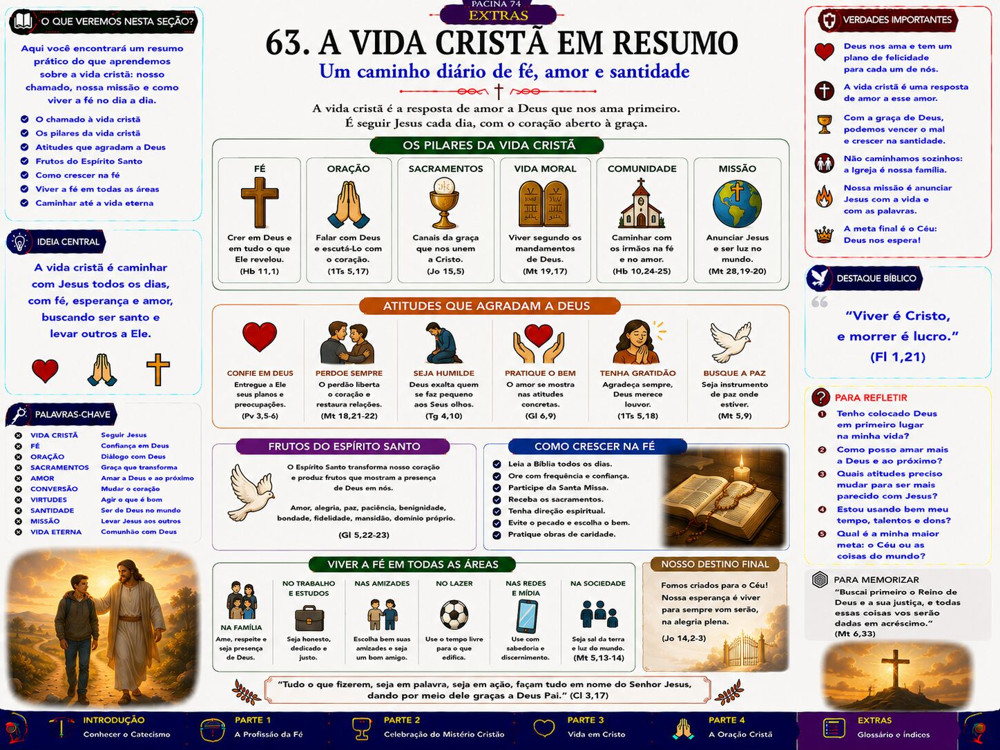
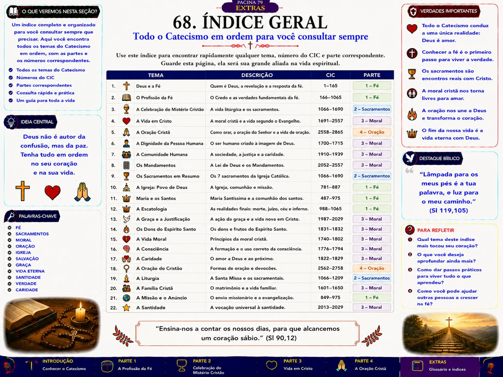
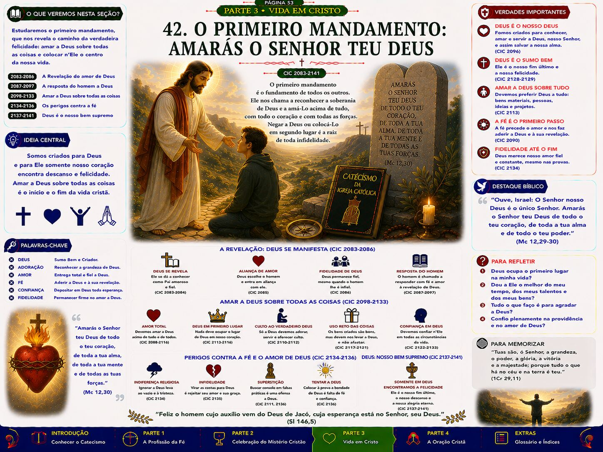
Um material profundo, didático e visual — acompanhado de bônus exclusivos para você transformar o estudo do Catecismo em um hábito diário.
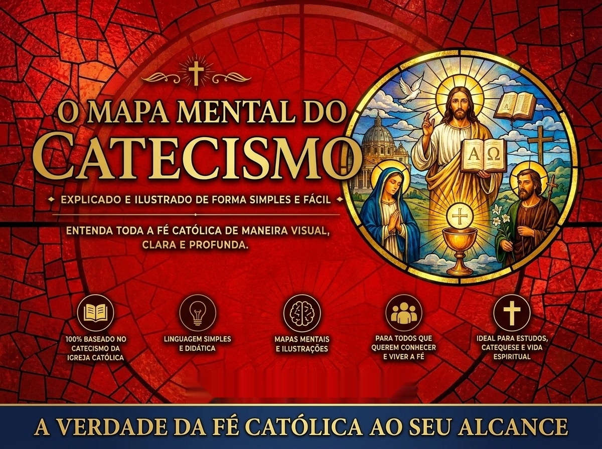
Conteúdo com mais de 100 páginas que sintetiza visualmente os mais de 2.800 parágrafos do Catecismo da Igreja Católica.
Inclusos somente na Super Oferta — 2 deles são bônus super premium
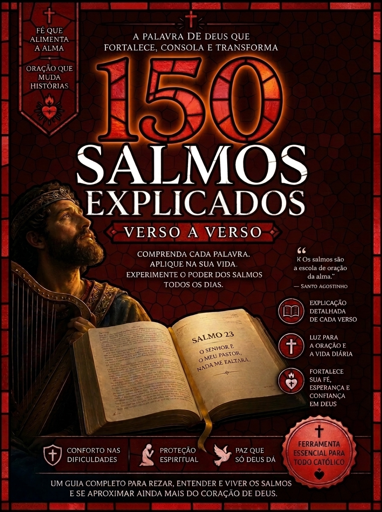
Um material gigantesco com mais de 700 páginas explicando, verso a verso, todos os 150 Salmos da Bíblia — em linguagem simples, didática e profunda. Ideal para complementar seus estudos, aprofundar sua oração e mergulhar na Palavra de Deus todos os dias.
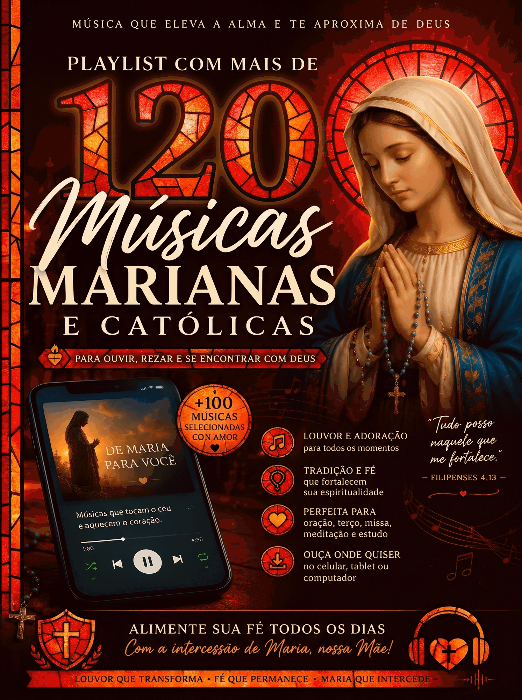
Uma seleção cuidadosa de mais de 120 músicas que tocam a alma — para rezar nos momentos difíceis, encontrar paz no meio do caos e sentir o abraço de Maria no seu dia a dia. Coloque o fone, abra o coração e deixe Deus falar com você através da música.
+ mais 4 bônus para sua jornada
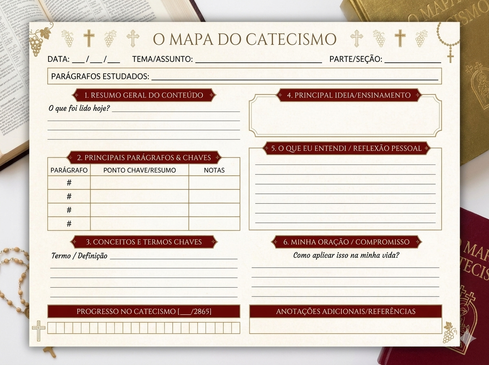
Para imprimir e acompanhar sua jornada — registre gratidões, orações, reflexões e desabafos.
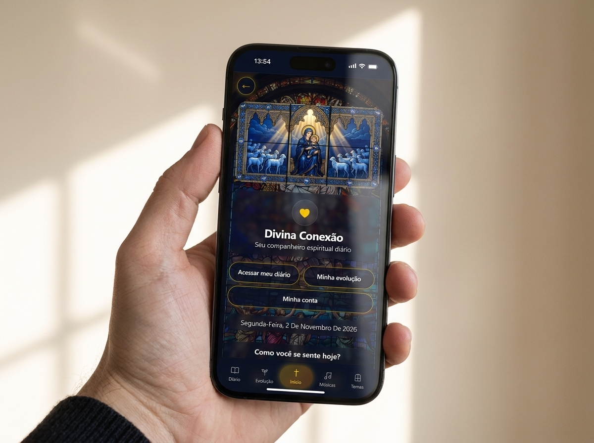
Diário digital com orações, versículos e devocionais baseados no seu estado emocional do dia.
Acesso a um grupo exclusivo com devocional semanal, reflexão simplificada e oração guiada.
Passos práticos para criar o hábito do estudo e da oração diária.
⚠️ Ainda dá tempo de levar a melhor opção abaixo!
95% das pessoas escolhem a Super Oferta — leve mais e pague pouquíssimo a mais.
150 Salmos Explicados Verso a Verso
+700 páginas — verso por verso
+100 Músicas Marianas e Católicas
+15 horas para rezar e meditar
Se nos próximos 7 dias você sentir que o material não é para você, basta nos enviar um e-mail e devolveremos 100% do seu investimento — sem perguntas, sem burocracia.
Acesso imediato. Garantia de 7 dias. Estude a fé católica como nunca antes.
QUERO MEU ACESSO AGORA